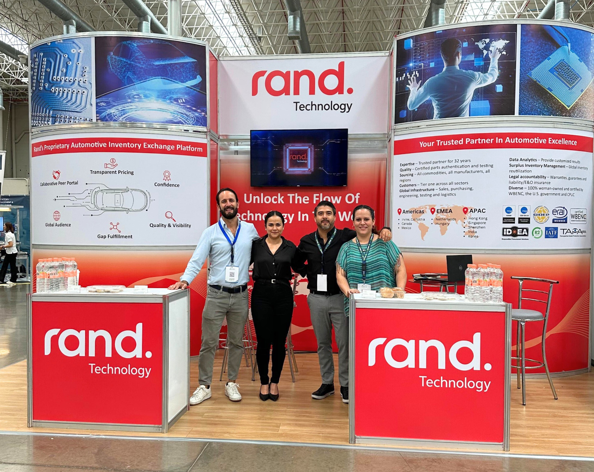

When I joined Rand Technology, a 30+ year-old B2B tech company with no marketing team prior to 2024, I was part of the effort to build our branding from the ground up.
I developed internal and external marketing materials—including sales presentations, trade show designs, and graphics—to establish a cohesive brand identity. I also launched our first internal newsletter to connect teams across 12 countries and collaborate cross-functionally to ensure consistent messaging.
Duration
July 2024 - Present
Location
Irvine, California
Trade show support
I designed and scaled Rand Technology's booth for the 2024 Binational Electronics Show in Chihuahua, Mexico, using Adobe Illustrator to create a cohesive and impactful visual presence. The purposeful design and messaging has allowed for reuse across other international auto shows attended by the company. I also assisted with assets for the Electronica trade show in Munich, Germany.
See moreGo-to-market materials

I designed and scaled Rand Technology's booth for the 2024 Binational Electronics Show in Chihuahua, Mexico, using Adobe Illustrator to create a cohesive and impactful visual presence. The purposeful design and messaging has allowed for reuse across other international auto shows attended by the company. I also assisted with assets for the Electronica trade show in Munich, Germany.
See more